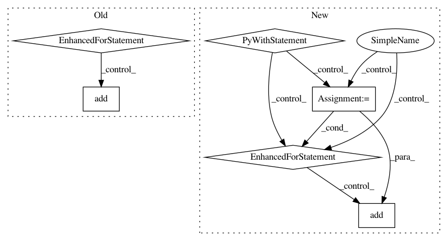

34bae27ac7d3c39335a2b8c7d4cd4efba56aa398,rllib/execution/replay_buffer.py,LocalReplayBuffer,add_batch,#LocalReplayBuffer#Any#,348
Before Change
batch = MultiAgentBatch({DEFAULT_POLICY_ID: batch}, batch.count)
with self.add_batch_timer:
for policy_id, s in batch.policy_batches.items():
for row in s.rows():
self.replay_buffers[policy_id].add(
row["obs"], row["actions"], row["rewards"],
row["new_obs"], row["dones"], row["weights"]
if "weights" in row else None)
self.num_added += batch.count
def replay(self):
if self._fake_batch:
After Change
// Handle everything as if multiagent
if isinstance(batch, SampleBatch):
batch = MultiAgentBatch({DEFAULT_POLICY_ID: batch}, batch.count)
with self.add_batch_timer:
if self.replay_mode == "lockstep":
// Note that prioritization is not supported in this mode.
for s in batch.timeslices(self.replay_sequence_length):
self.replay_buffers[_ALL_POLICIES].add(s, weight=None)
else:
for policy_id, b in batch.policy_batches.items():
for s in b.timeslices(self.replay_sequence_length):
if "weights" in s:
weight = np.mean(s["weights"])
else:
weight = None
self.replay_buffers[policy_id].add(s, weight=weight)
self.num_added += batch.count
def replay(self):
if self._fake_batch:
In pattern: SUPERPATTERN
Frequency: 3
Non-data size: 6
Instances
Project Name: ray-project/ray
Commit Name: 34bae27ac7d3c39335a2b8c7d4cd4efba56aa398
Time: 2020-06-12
Author: ekhliang@gmail.com
File Name: rllib/execution/replay_buffer.py
Class Name: LocalReplayBuffer
Method Name: add_batch
Project Name: dmlc/gluon-nlp
Commit Name: 70a188776f7470c838dd22b1636462b75573a734
Time: 2020-07-16
Author: lausen@amazon.com
File Name: src/gluonnlp/models/roberta.py
Class Name: RobertaEncoder
Method Name: __init__
Project Name: dmlc/gluon-nlp
Commit Name: 70a188776f7470c838dd22b1636462b75573a734
Time: 2020-07-16
Author: lausen@amazon.com
File Name: src/gluonnlp/models/bert.py
Class Name: BertTransformer
Method Name: __init__